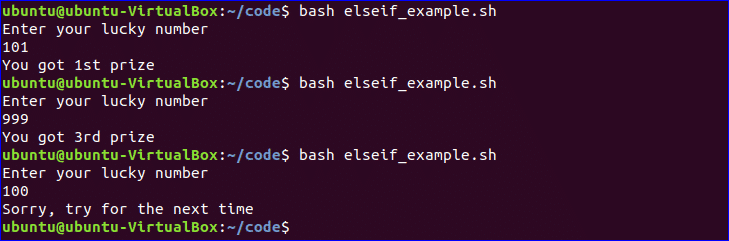

Bash is the shell, or command language interpreter, for the GNU operating system. The name is an acronym for the ‘Bourne-Again SHell’, a pun on Stephen Bourne, the author of the direct ancestor of the current Unix shell sh, which appeared in the Seventh Edition Bell Labs Research version of Unix.
Bash is largely compatible with sh and incorporates useful features from the Korn shell ksh and the C shell csh. It is intended to be a conformant implementation of the IEEE POSIX Shell and Tools portion of the IEEE POSIX specification (IEEE Standard 1003.1). It offers functional improvements over sh for both interactive and programming use.
While the GNU operating system provides other shells, including a version of csh, Bash is the default shell. Like other GNU software, Bash is quite portable. It currently runs on nearly every version of Unix and a few other operating systems - independently-supported ports exist for MS-DOS, OS/2, and Windows platforms.
A Unix shell is both a command interpreter and a programming language. As a command interpreter, the shell provides the user interface to the rich set of GNU utilities. The programming language features allow these utilities to be combined. Files containing commands can be created, and become commands themselves. These new commands have the same status as system commands in directories such as /bin, allowing users or groups to establish custom environments to automate their common tasks.
Shells may be used interactively or non-interactively. In interactive mode, they accept input typed from the keyboard. When executing non-interactively, shells execute commands read from a file.
A shell allows execution of GNU commands, both synchronously and asynchronously. The shell waits for synchronous commands to complete before accepting more input; asynchronous commands continue to execute in parallel with the shell while it reads and executes additional commands. The redirection constructs permit fine-grained control of the input and output of those commands. Moreover, the shell allows control over the contents of commands’ environments.
Hello World
You can run bash script from the terminal or by executing any bash file. Run the following command from the terminal to execute a very simple bash statement. The output of the command will be ‘Hello World’.
Run the file with bash command.
Example: $ echo "Hello World"
You can use echo command with various options. Some useful options are mentioned in the following example. When you use ‘echo’ command without any option then a newline is added by default. ‘-n’ option is used to print any text without new line and ‘-e’ option is used to remove backslash characters from the output. Create a new bash file with a name, ‘echo_example.sh’ and add the following script.
#!/bin/bash
echo "Printing text with newline"
echo -n "Printing text without newline"
echo -e "\nRemoving \t backslash \t characters\n"
Run the file with bash command.
$ bash echo_example.sh
You can use multi line comment in bash in various ways. A simple way is shown in the following example. Create a new bash named, ‘multiline-comment.sh’ and add the following script. Here, ‘:’ and “ ’ ” symbols are used to add multiline comment in bash script. This following script will calculate the square of 5.
#!/bin/bash
: '
The following script calculates
the square value of the number, 5.
'
((area=5*5))
echo $area
Run the file with bash command.
$ bash multiline-comment.sh
Create a bash file with the name, ‘while_example.sh’, to know the use of while loop. In the example, while loop will iterate for 5 times. The value of count variable will increment by 1 in each step. When the value of count variable will 5 then the while loop will terminate.
#!/bin/bash
valid=true
count=1
while [ $valid ]
do
echo $count
if [ $count -eq 5 ];
then
break
fi
((count++))
done
Run the file with bash command.
$ bash while_example.sh
The basic for loop declaration is shown in the following example. Create a file named ‘for_example.sh’ and add the following script using for loop. Here, for loop will iterate for 10 times and print all values of the variable, counter in single line.
#!/bin/bash
for (( counter=10; counter>0; counter-- ))
do
echo -n "$counter "
done
printf "\n"
Run the file with bash command.
$ bash for_example.sh
‘read’ command is used to take input from user in bash. Create a file named ‘user_input.sh’ and add the following script for taking input from the user. Here, one string value will be taken from the user and display the value by combining other string value.
#!/bin/bash
echo "Enter Your Name"
read name
echo "Welcome $name to LinuxHint"
Run the file with bash command.
$ bash user_input.sh
You can use if condition with single or multiple conditions. Starting and ending block of this statement is define by ‘if’ and ‘fi’. Create a file named ‘simple_if.sh’ with the following script to know the use if statement in bash. Here, 10 is assigned to the variable, n. if the value of $n is less than 10 then the output will be “It is a one digit number”, otherwise the output will be “It is a two digit number”. For comparison, ‘-lt’ is used here. For comparison, you can also use ‘-eq’ for equality, ‘-ne’ for not equality and ‘-gt’ for greater than in bash script.
#!/bin/bash
n=10
if [ $n -lt 10 ];
then
echo "It is a one digit number"
else
echo "It is a two digit number"
fi
Run the file with bash command.
$ bash simple_if.sh
And Condition If Statement
Different types of logical conditions can be used in if statement with two or more conditions. How you can define multiple conditions in if statement using AND logic is shown in the following example. ‘&&’ is used to apply AND logic of if statement. Create a file named ‘if_with_AND.sh’ to check the following code. Here, the value of username and password variables will be taken from the user and compared with ‘admin’ and ‘secret’. If both values match then the output will be “valid user”, otherwise the output will be “invalid user”.
!/bin/bash
echo "Enter username"
read username
echo "Enter password"
read password
if [[ ( $username == "admin" && $password == "secret" ) ]]; then
echo "valid user"
else
echo "invalid user"
fi
Run the file with bash command.
$ bash if_with_AND.sh
‘||’ is used to define OR logic in if condition. Create a file named ‘if_with_OR.sh’ with the following code to check the use of OR logic of if statement. Here, the value of n will be taken from the user. If the value is equal to 15 or 45 then the output will be “You won the game”, otherwise the output will be “You lost the game”.
#!/bin/bash
echo "Enter any number"
read n
if [[ ( $n -eq 15 || $n -eq 45 ) ]]
then
echo "You won the game"
else
echo "You lost the game"
fi
Run the file with bash command.
$ bash if_with_OR.sh
Else If and Else Condition
The use of else if condition is little different in bash than other programming language. ‘elif’ is used to define else if condition in bash. Create a file named, ‘elseif_example.sh’ and add the following script to check how else if is defined in bash script.
#!/bin/bash
echo "Enter your lucky number"
read n
if [ $n -eq 101 ];
then
echo "You got 1st prize"
elif [ $n -eq 510 ];
then
echo "You got 2nd prize"
elif [ $n -eq 999 ];
then
echo "You got 3rd prize"
else
echo "Sorry, try for the next time"
fi
Run the file with bash command.
$ bash elseif_example.sh
